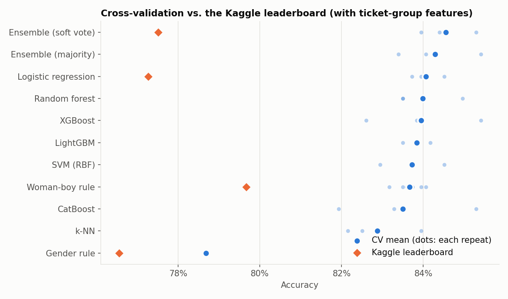
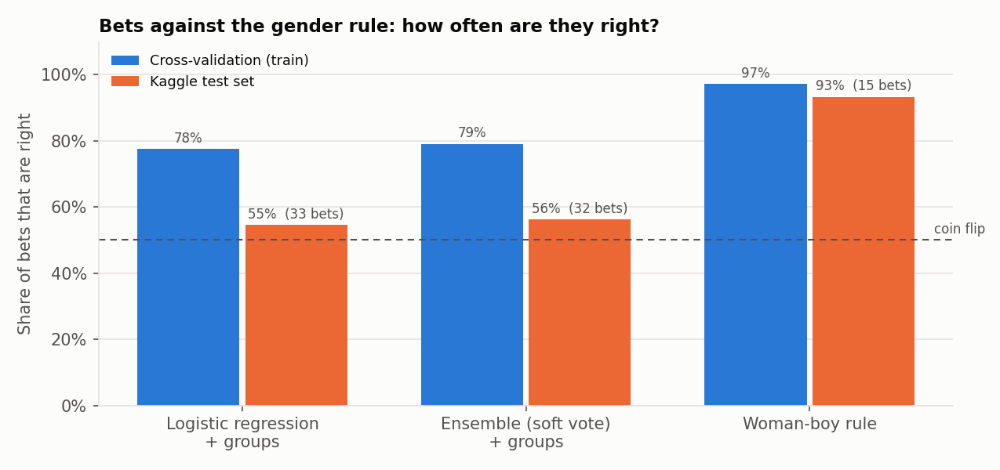
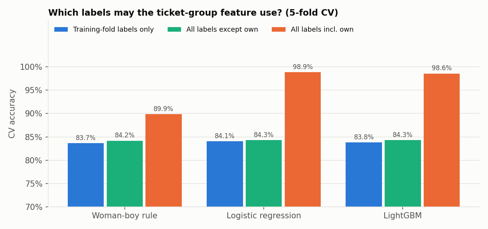
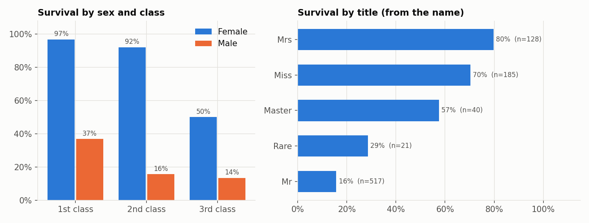

The Kaggle Titanic competition: 891 passengers to learn from, 418 to predict. Seven model families with nested cross-validation reach 84% accuracy in CV and land at 77% on the leaderboard. A rule built on the gender baseline plus one family correction scores 79.7%. This page explains the gap.
Nested CV (outer 5-fold x 3 repeats, inner grid search) for the models, 5-fold x 10 repeats for the rules. Kaggle scores all 418 test passengers, so one passenger is 0.24 points.
| Submission | CV | Kaggle |
|---|---|---|
| Gender rule | 0.787 | 0.76555 |
| Woman-boy rule | 0.837 | 0.79665 |
| Ensemble (soft vote, 7 models) + ticket groups | 0.846 | 0.77511 |
| Logistic regression + ticket groups | 0.841 | 0.77272 |
| Ensemble (soft vote), no groups | 0.835 | 0.76794 |
| XGBoost, no groups | 0.837 | 0.76076 |
| LightGBM with a leaking group feature | 0.986 | 0.64114 |

Sex alone explains most of the outcome, so every model is the gender rule plus a few dozen bets: a man predicted to survive, or a woman predicted to die. Since the gender rule was submitted too, the value of the bets on the test set follows from the two scores, net correct = (score − gender score) × 418, without any test label.

The gender rule has nothing to fit and still drops two points from CV to Kaggle, one standard error on 418 passengers. The models drop six to seven, so roughly four points are bets that do not generalize. Hyperparameter tuning adds only 0.5 points of optimism on average.
596 of the 1,309 passengers share one of 216 tickets, and 152 test passengers share a ticket with someone in training. A passenger's ticket-group feature is the survival rate of their ticket mates, and the labels it may use decide what CV reports.

Fold-to-fold standard deviation is about 2 points, and XGBoost moves from 0.826 to 0.854 between CV repeats. All seven tuned families land between 0.829 and 0.841; on the leaderboard the ensemble beats logistic regression by one passenger.
